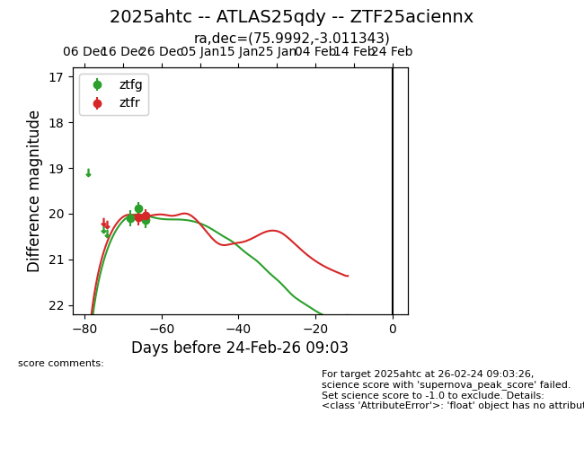
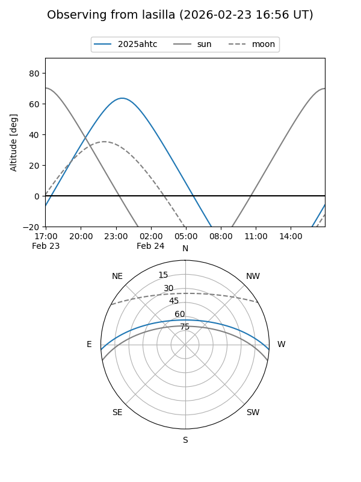
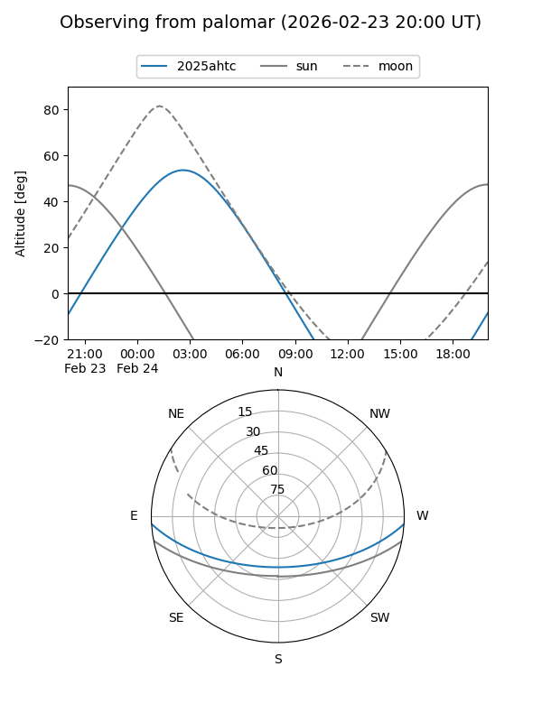
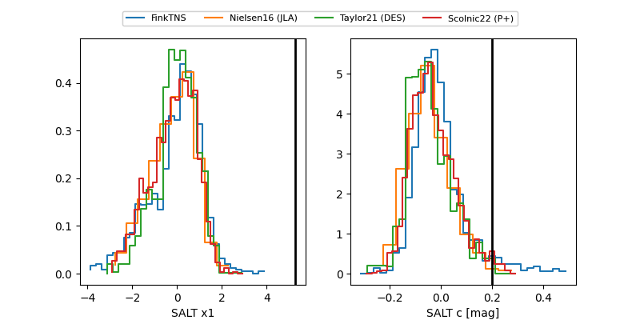

2025ahtc
Target 2025ahtc at 2026-01-09 12:49
Aliases and brokers:
FINK: link
Lasair: link
ALeRCE: link
TNS: link
YSE: link
alt names
ZTF25aciennx (ztf,fink_ztf)
2025ahtc (tns,yse)
ATLAS25qdy (atlas)
Coordinates:
equatorial (ra, dec) = 75.9992,-3.01134
equatorial (HMS+DMS) = 05:03:59.82,-03:00:40.83
galactic (l, b) = (202.8137,-25.18295)
Flags:
Photometry:
last ztfg=20.14, ztfr=20.05
3 ztfg, 2 ztfr detections
Lightcurve

Visibility


Additional plots
